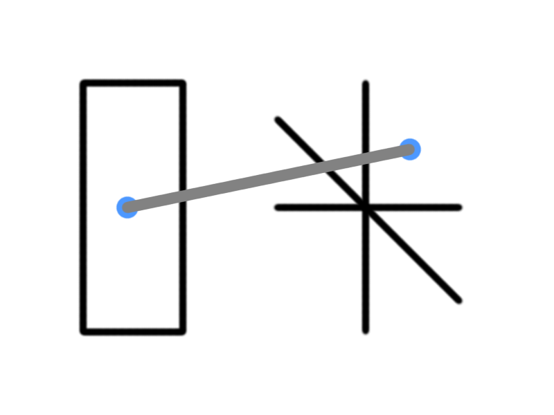
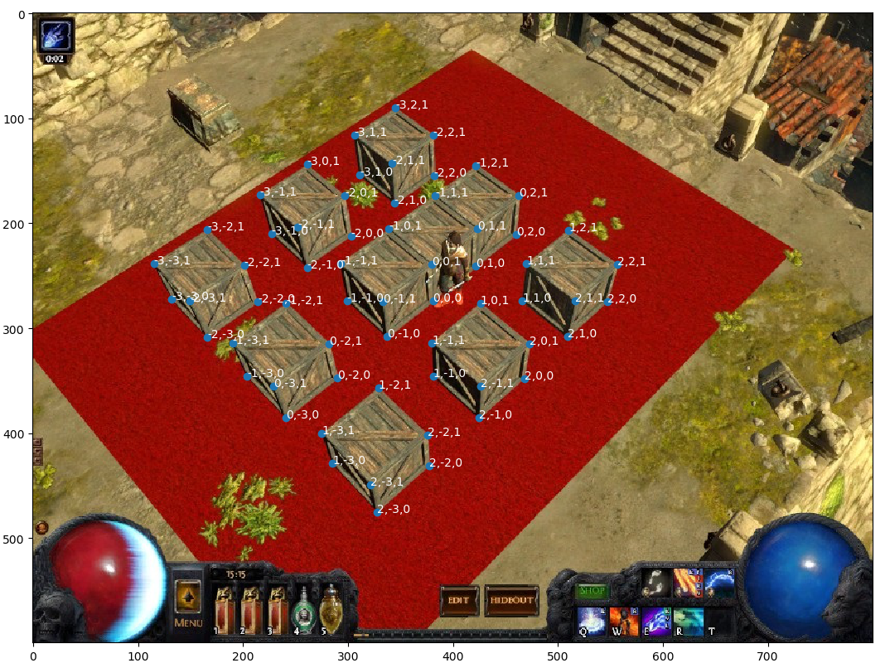
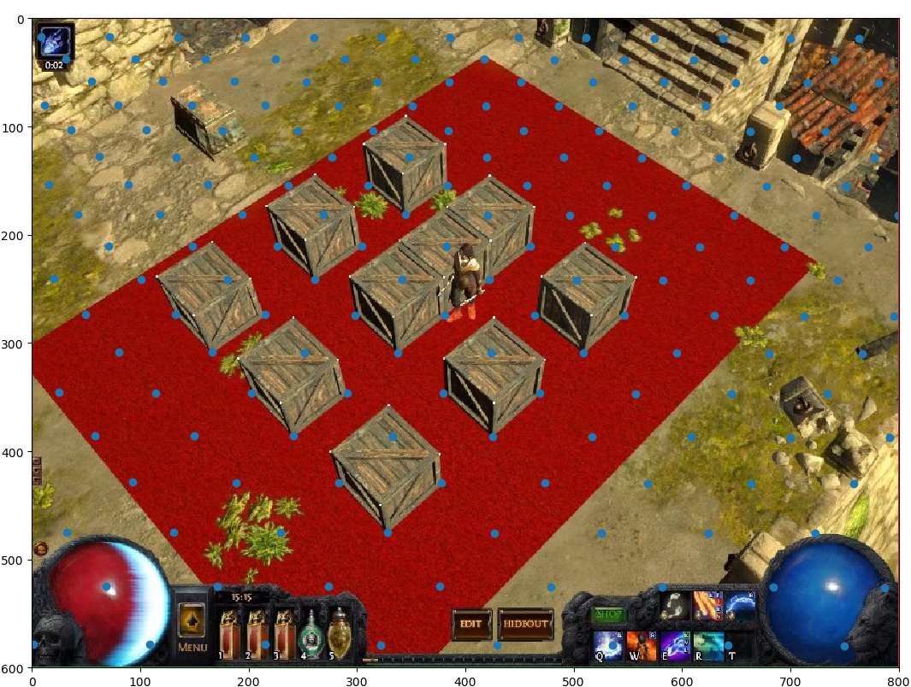

Calibrating a Projection Matrix for Path of Exile
Sun, 09 Jul 2017
3D Projection, Camera Transform, Computer Science, Gaming, Machine Learning, Poe, Python, Software, Tensorflow
This post is part of a series on creating an AI for the game Path of Exile © (PoE). In this post, techniques for updating the internal representation of the world given a static image of the game are explored.Challenges with Visual Input
A difficulty involved in having an AI interact with visual input, is that image data is 2D, but the (game) world is 3D. The game engine, most probably, has its own internal representation of the world in 3D and then uses projection techniques to render the game in 2D for display on the screen. It would be extremely helpful to obtain data from the game's representation of the world, through reverse-engineering, but for the purposes of this AI this avenue is not explored.In order to more accurately model the world, the projection matrix for the game is approximated. This matrix is then used to determine the 3D coordinates that correspond to 2D coordinates on the screen and (with some assumptions) visa-versa. Figure 1 illustrates the basic concept of the projection mapping. The left rectangle represents the screen and the right coordinate axes represent the world coordinates. The grey line (projection mapping) maps the blue point from world coordinates to its position on the screen.

Figure 1: The Projection Mapping
The process of approximating a projection matrix given a 2D image is known as camera calibration.
Camera Calibration
Camera calibration is accomplished by using an image that contains an object the dimensions of which are known in 3D coordinates. The mapping from 3D coordinates to 2D coordinates is used to construct an optimization problem which is solved to recover the transformation matrix. The idea is shown below in Equation 1.\(\textbf{A} \textbf{w} = \textbf{p}\)
Equation 1: The Projection Transform
In the above equation, \(\textbf{A}\) is the projection matrix, \(\textbf{w}\) is the matrix of world points (3D), and \(\textbf{p}\) is the matrix of projected points (2D).
To calibrate the camera for Path of Exile, that is to determine \(\textbf{A}\) in the above equation, several boxes of a fixed size are used. The screenshot used to calibrate the camera is shown below in Figure 2.

Figure 2: Screenshot for Camera Calibration
Note that the approximate corners of the boxes are specified with a point and labeled with the corresponding world point. This tedious process needs to be performed manually. The bottom-right of the center box is arbitrary specified as the 3D point (0, 0, 0) and the boxes are assumed to be unit cubes. The spacing between the boxes is also of unit length. Also note that this projection is for a screen resolution of 800x600.
The (abbreviated) set of datapoints are shown below in Table 1.
| World Point | Projected Point |
|---|---|
| \((0,0,1)\) | \((380,239)\) |
| \((0,0,0)\) | \((381,274)\) |
| \((0,-1,0)\) | \((337,308)\) |
| \((0,-1,1)\) | \((333,275)\) |
| \((-1,-1,1)\) | \((293,238)\) |
| \((-1,-1,0)\) | \((299,274)\) |
| \((-1,0,1)\) | \((339,205)\) |
| \((0,1,1)\) | \((423,205)\) |
| \((0,1,0)\) | \((422,241)\) |
| \((-1,1,1)\) | \((383,174)\) |
| \((-1,2,1)\) | \((422,145)\) |
| \((0,2,1)\) | \((463,174)\) |
| ... | ... |
Table 1: The Data Mapping
Next, a transformation matrix \(\textbf{A}\) is constructed that projects the 3D points to the 2D ones.
Performing the Fit
A non-linear fit using TensorFlow is constructed. Note: It is more common to pose the calibration problem as a homogeneous least squares problem; the Adam method seems to give better results for this particular image.#Fits a transformation matrix W which projects from world points to
#projected points.
#WP: The matrix of world points
#PP: The matrix of projected points
def TFMin(WP, PP, init = None):
X = tf.placeholder("float", [4, None])
Y = tf.placeholder("float", [3, None])
if init is None: #If no initialization values given; use random values
init = tf.truncated_normal((3, 4))
T = tf.Variable(init)
YH = TFYH(T, X) #Output of transform
L = tf.reduce_sum(tf.nn.l2_loss(YH - Y))
O = tf.train.AdamOptimizer(learning_rate = 0.00005).minimize(L)
i, mIter, tol = 0, 999999, 52.1625
sess = tf.Session()
init = tf.global_variables_initializer()
sess.run(init)
while i < mIter:
l, _ = sess.run([L, O], feed_dict = {X:WP, Y:PP})
if i % 100 == 0 or l < tol:
print(str(l))
if l < tol:
break
i += 1
W = T.eval(session = sess)
sess.close()
return W
def TFYH(T, X):
YH = tf.matmul(T, X)
return YH / YH[2] #For perspective projectionThe projection matrix resulting from running the above code is shown below in Equation 2. The final values may vary slightly due to differences in initialization.
\[\displaylines{\textbf{A}=\left(\textbf{Q}|\textbf{m}\right)=\left(\begin{array}{cccc}0.5976&1.1309&-0.5304&7.9424\\0.5235&-0.5204&-1.0497&5.7140\\-0.0007&0.0007&-0.0013&0.0208\end{array}\right)}\]
Equation 2: The Resulting Projection Matrix
The camera position \(\textbf{C}\) in world coordinates can be recovered using the formula shown in Equation 3. Note that \(\textbf{Q}\) is a 3 by 3 matrix and \(\textbf{m}\) is a 3 by 1 matrix.
\(\textbf{C}=-\textbf{Q}^{-1}\textbf{m}\)
Equation 3: Recovering the Camera Position
The following code fits the projection matrix and recovers the camera position in the variable CP.
#Recover the camera center in world coordinates
A = TFMin(WP.T, PP.T)
Q = A[:, 0:3]
m = A[:, 3]
QI = np.linalg.inv(Q)
C = -np.dot(QI, m)Results
The recovered camera position is \((5.322, -4.899, 10.526)\). Looking at the original screenshot, this value agrees with intuition based on the chosen orientation. Recall that a unit in the world space was taken to be the height/width/depth of a box. Thus the camera is roughly 5, 4, and 10 box-lengths in the postive x, negative y, and positive z directions respectively. Using this projection matrix, points can be projected onto the original image. Figure 3 below projects a grid of points representing the xy plane onto the original image.

Figure 3: Original Image with Projected XY Plane
The above projection looks to be quite reasonable. With the projection matrix calibrated, a matrix of 3D points (each row being 1 point) can be projected using the following function.
#p: 3D points to project
def Get2DT(self, p, M = None):
if M is None:
M = self.TM #M is the projection matrix
ap = np.ones((p.shape[0], 4))#Add arbitrary perspective term set to 1
ap[:, :-1] = p
r = np.dot(ap, M) #Perform projection
r /= r[:, [2]] #Divide by perspective term
return r[:, 0:2] #Return first 2 coordinatesAssumptions and Translations
If it is assumed the character moves only on the xy plane, the 3D position of the character can be recovered from the pixel coordinate of the character. This is accomplished by assuming \(z = 0\) and then solving for \(x\) and \(y\) in the projection equation, given pixel coordinates of the character. Code to accomplish this follows.#Solve for 3d coords given 2d coords (assuming on xy plane)
#x: x value of pixel coordinates
#y: y value of pixel coordinates
def Solve3DT(self, x, y, M = None):
if M is None:
M = self.TM #M is the projection matrix
s1 = M[3, 1] - y * M[3, 2]
s2 = M[1, 1] - y * M[1, 2]
s3 = -M[0, 1] + y * M[0, 2]
try:
R = np.zeros((3, len(x))) #R will contain the 3D points
except TypeError:
R = np.zeros((3))
R[0] = (s2 * (M[3, 0] - x * M[3, 2]) - (M[1, 0] - x * M[1, 2]) * s1)/((M[0, 1] - y * M[0, 2]) * (M[1, 0] - x * M[1, 2]) - (M[0, 0] - x * M[0, 2]) * (M[1, 1] - y * M[1, 2]))
R[1] = (M[3, 0] * -s3 + M[0, 0] * -s1 + x * (M[3, 1] * M[0, 2] - M[0, 1] * M[3, 2]))/( M[1, 0] * s3 + M[0, 0] * s2 + x * (-M[1, 1] * M[0, 2] + M[0, 1] * M[1, 2]))
return R.TIn the above 2 functions, the transpose of the projection matrix is used for efficiency reasons. With the above two functions in place, grid points on the xy plane that fall within the 800x600 screen can be computed with the following code. This function will be key later in keeping track of where the player is in a level.
#self.w and self.h are the width and height of the screen
def GridIter(self, PT = None, QM = 1.0):
if PT is None:
PT = self.TM
#Get the range of values to compute grid for
R = self.Solve3DT(np.array([0, self.w, 0, self.w]), np.array([0, 0, self.h, self.h]))
minx, miny, _ = np.floor(R.min(axis = 0) / QM) * QM
maxx, maxy, _ = np.ceil(R.max(axis = 0) / QM) * QM
GP = np.zeros((int((maxx - minx) * (maxy - miny) / QM), 4))
GP[:, 0:2] = np.mgrid[minx:maxx:QM, miny:maxy:QM].reshape(2, -1).T
GP[:, 3] = 1
PR = np.dot(GP, PT)
PR = (PR[:, 0:2] / PR[:, [2]])
#Only keep points that are on the screen
ind = ((PR >= np.array([0, 0])) & (PR < np.array([self.w, self.h]))).sum(axis = 1) == 2
return GP[ind], PR[ind]In Path of Exile, as the player moves, so does the camera (with the camera angle fixed). To account for the moving camera and player, world points are translated back toward the origin before being projected. In practice, this is accomplished by multiplying the projection matrix by a translation matrix to obtain the final projection matrix. A translation matrix which translates a set of points by the vector \((x, y, z)\) is shown below in Equation 4.
\[\displaylines{\left(\begin{array}{cccc}1&0&0&0\\ 0&1&0&0\\ 0&0&1&0\\ x&y&z&1\end{array}\right)}\]
Equation 4: A Translation Matrix
Using matplotlib, an animation of the XY plane is constructed which simulates the movement of the character in the world. In the animation in Figure 4, the camera moves linearly through several randomly generated points.

Figure 4: Camera Translation
With the above code in place, distances on the screen can be more accurately approximated. For the sake of simplicity, it is assumed the player always moves on the XY plane. In some levels, however, this is not a safe assumption. This topic may need to be revisited given the performance of the AI.